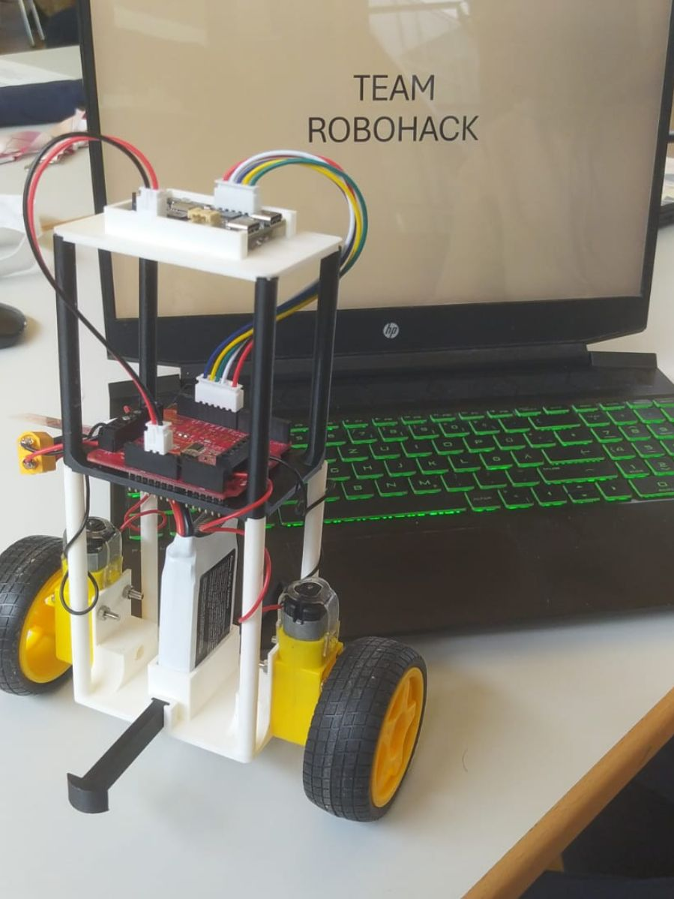

2-wheeled-robot
Advanced control system for autonomous two-wheeled robot with dynamic balance capabilities
Overview
This project focuses on improving the PID controller for a self-balancing two-wheeled robot, as part of a hackathon challenge. The robot uses a gyroscope and motor controller, with Infineon TLE94112ES motor driver and Bosch BMI270 IMU, to maintain balance and demonstrate advanced control strategies. The project provides a platform for experimenting with sensor integration, real-time control, and embedded programming.
Key Features
- PID controller for real-time self-balancing
- Integration of Infineon TLE94112ES motor driver
- Bosch BMI270 IMU for orientation and motion sensing
- Sensor fusion and Kalman filtering for robust angle estimation
- Arduino-based embedded implementation
- Open platform for experimentation and improvement
Visual Results
If the video does not play, download and open it with VLC or a modern browser.
Technologies Used
Project Impact
This self-balancing robot is a great example of how robotics can be both educational and practical. It shows how sensors and smart programming can bring machines to life, making them react and adapt just like living creatures. The project is ideal for anyone interested in robotics, engineering, or learning how technology can solve balance and movement challenges.
GitHub Repository
Explore the complete implementation, documentation, and codebase on GitHub:
View on GitHub